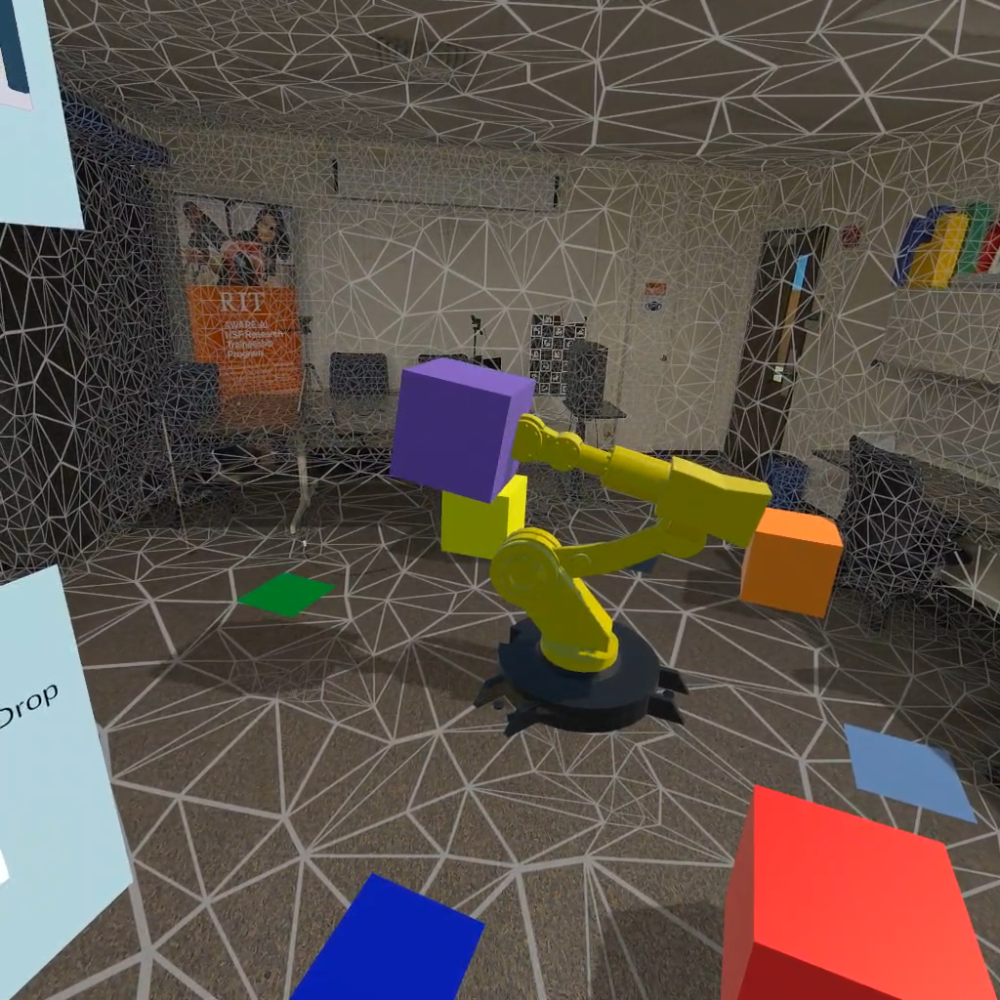

AR Robotic Arm Control
Goal of the Project
This project aimed to simplify controlling a robotic arm in an augmented reality (AR) environment using large language models (LLMs). By integrating natural language inputs, users can issue voice commands that the system interprets and converts into structured actions for a virtual robotic arm, making interaction more intuitive and accessible.
How It Was Built
The system was developed in Unity and deployed on a Meta Quest 3 headset. Voice commands were captured using the built-in microphones and processed with Whisper API for transcription. The transcribed text was then sent to an LLM (via the OpenAI API), which interpreted the command and returned structured instructions.
An inverse kinematics (IK) solver guided the robotic arm’s movements, allowing it to pick and place virtual objects. Users could also choose to control the arm manually through an AR interface.
Results
The result was a virtual robotic arm that responded to natural voice commands. Users could say things like, “Move the orange block to the yellow platform,” and the virtual arm would interpret and execute the action.
What I Learned
Developing this project deepened my understanding of integrating LLMs with real-time AR systems. I learned how to streamline the pipeline from voice input through transcription, language interpretation, and final action execution. Additionally, I gained insights into performance optimizations necessary for AR applications, such as minimizing latency between voice input and robotic response, and ensuring the IK computations remained smooth under changing conditions.
Future Work
Future improvements could include integrating a computer vision module, allowing the system to dynamically identify and localize real-world objects for the robotic arm to interact with. Additionally, I’d explore reducing reliance on cloud-based APIs for transcription and LLM processing by deploying lightweight, on-device models to improve responsiveness. Enhancing the arm’s action repertoire, adding collision avoidance, and implementing multi-step reasoning within the LLM pipeline would further refine the user experience.